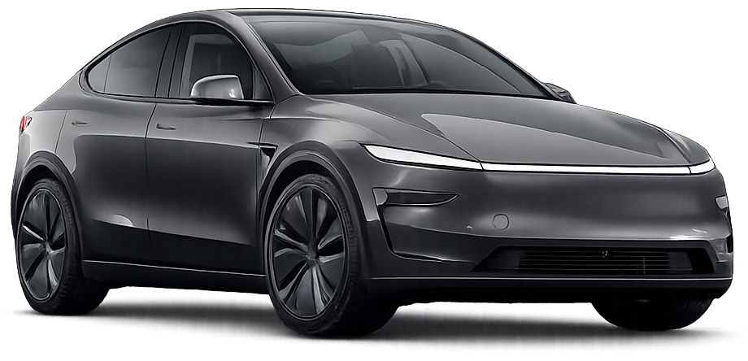
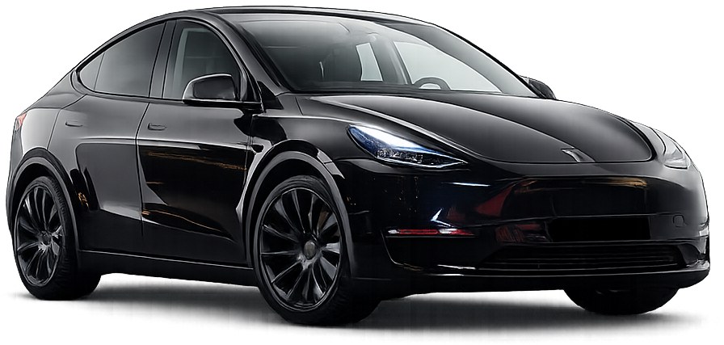

Premium private transport
Switzerland, on your terms.
Airport pickups, hotels, ski resorts and business travel. Every journey is private, punctual and handled with discretion.

The standard is personal.
A calm cabin, a carefully planned route and a driver who understands that good service is felt, not announced.
Professional drivers
Reliable scheduling
Discreet premium service
Our cars
Modern electric comfort for city transfers and long-distance journeys.
